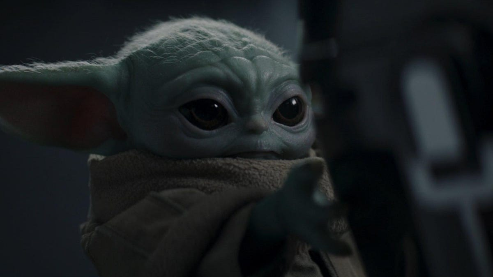

About Grogu
Grogu - also known as "The Child" - is a force-sensitive Mandalorian belonging to the same mysterious species as the legendary Grand Master Yoda.
Grogu using the Force
Grogu's Characteristics
- He has a connection to the Force
- He loves to play with the control knob from the Razor Crest
- He often wants to eat living creatures like frogs, worms or eggs
Grogu's Friends
Grogu has some strong and powerful friends. His best friend and master is Din Djarin. He is a Mandalorian bounty hunter. Click on the links below to read more about him: